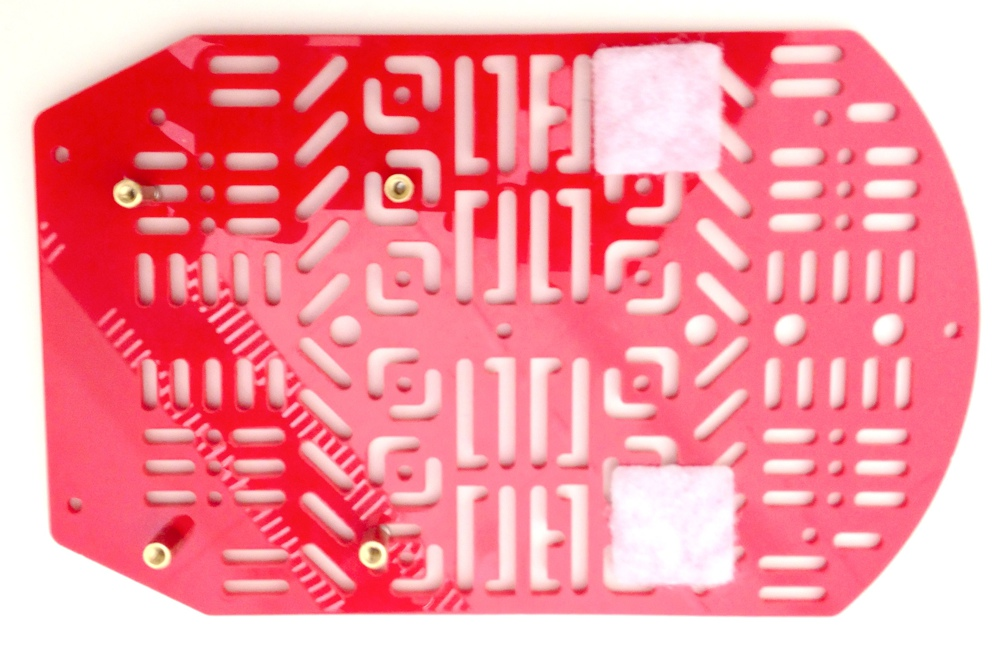
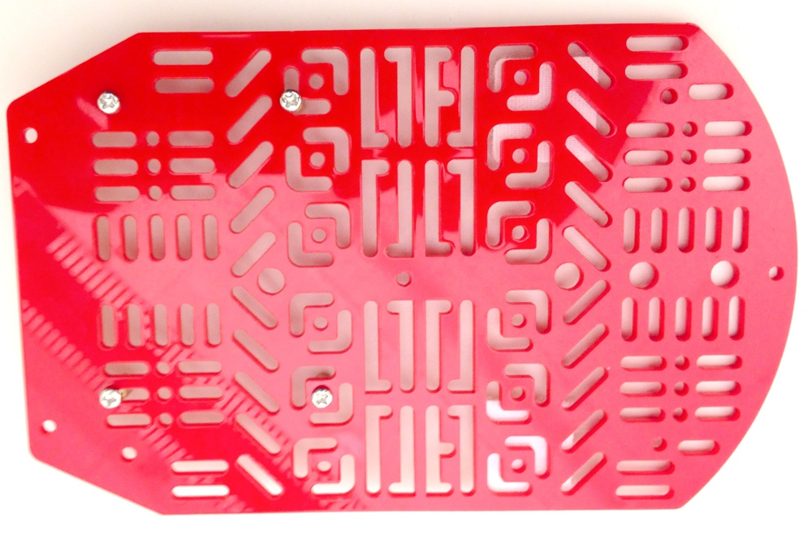
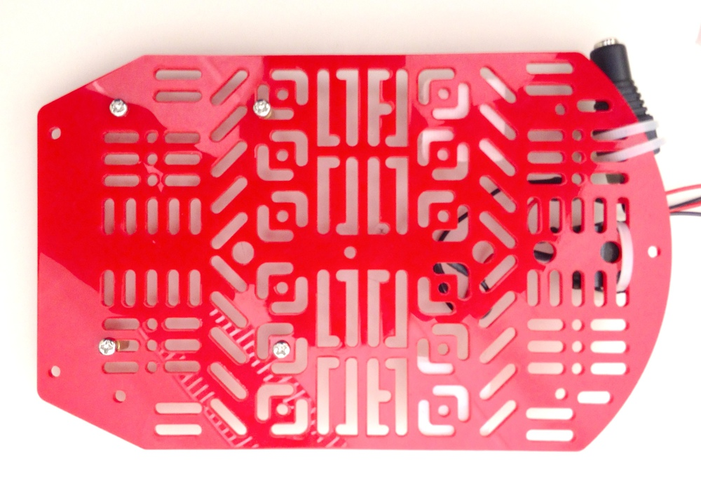
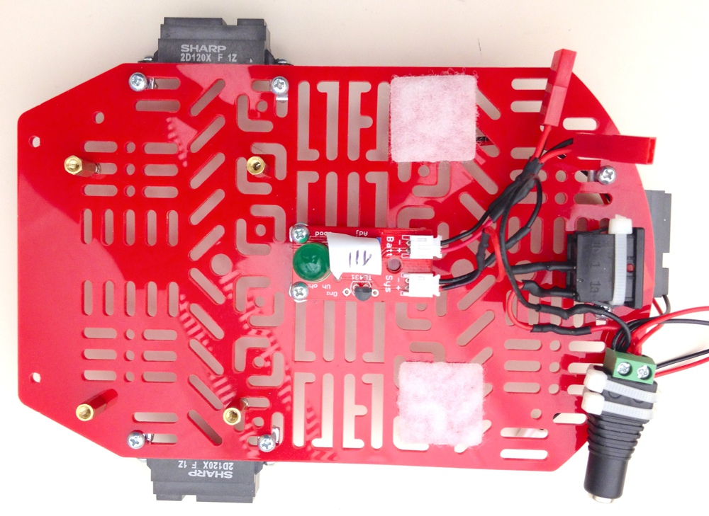
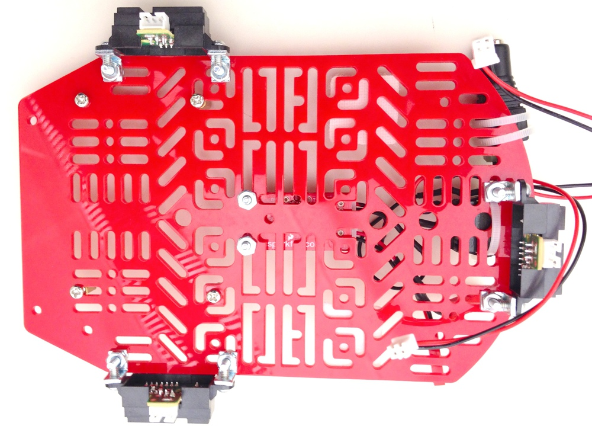

QuickBot MOOC v2 -- Building
- 1. Rocker Switch Wiring Assembly
- 2. DC Plug Wiring Assembly
- 3. Encoder Cable Assembly
- 4. IR Cable Assembly
- 5. IR Sensor Assembly
- 6. Logic Level Converter Assembly
- 7. Breadboard Assembly
- 8. Motor-Encoder Assembly
- 9. Bottom Chassis With Motors Assembly
- 10. Bottom Chassis With Wheels Assembly
- 11. Bottom Chassis With Voltage Regulators Assembly
- Bottom Chassis With IR Sensors Assembly
- 13. Top Chassis Plate Assembly
- Top Chassis Plate With BBB Assembly
- QuickBot Assembly
1. Rocker Switch Wiring Assembly
Number to build: 1
Parts
- 2 - 2-pin Female Red JST Battery Connector
- 1 - 2-pin Female 2mm-pitch JST Uh-oh Connector
- 1 - 3-pin Rocker Switch
- 3 - 1/2” Heat Shrink Tubing
 Rocker Switch Wiring Parts
Rocker Switch Wiring Parts
Tools
- Wire Strippers
- Wire Cutters
- Soldering Iron
Instructions
- Cut battery connector wires to 3.5” and strip 1/4” from ends.
- Twist stripped ends of black wires of battery connector together and twist stripped ends of red wires of battery connector together.
- Insert black wires through one heat shrink tube and insert red wries through another one of the heat shrink tubes.
- Untwist Uh-oh wire 1” and strip 1/4” from ends.
- Insert red wire of Uh-oh connector through the last heat shrink tube.
- Solder red wires of battery connectors to the pin on the “O” side of switch.
- Pro tip: Solder wires together first, then solder to the pin of the switch.
- Solder red wire of Uh-oh connector to the middle pin of the switch.
- Solder all black wires together.
-
Heat shrink the tubing around solder points.
 Rocker Switch Wiring Assembly
Rocker Switch Wiring Assembly
2. DC Plug Wiring Assembly
Number to build: 1
Parts
- 2 - 2-pin Female 0.1in-pitch JST Volt Reg Connector
- 1 - 2-pin Female 2mm-pitch JST Uh-oh Connector
- 1 - DC Barrel Plug
 DC Plug Wiring Parts
DC Plug Wiring Parts
Tools
- Wire Strippers
- Wire Cutters
- Small Screw Driver
Instructions
- Strip all wires 1/4” from end.
- Twist all 3 black wires together and screw into negative terminal of DC plug.
-
Twist all 3 red wires together and screw into positive terminal of DC plug.
 DC Plug Wiring Assembly
DC Plug Wiring Assembly
3. Encoder Cable Assembly
Number to build: 2
(1 with purple/gray ribbon and 1 with red/orange ribbon)
Parts
- 1 - Encoder Ribbon Cable
- 5 - Female Molex Crimp Pins
- 1 - 5-pin Molex Header
- 2 - 1x2-pin 0.1” Crimp Connector Housing
- 1 - 1x1-pin 0.1” Crimp Connector Housing
- 5 - 0.1” Male Crimp Pins
 Encoder Cable Parts
Encoder Cable Parts
Tools
- Wire Strippers
- Wire Cutters
- Crimpers
- Needle Nose Pliers
Instructions
- Separate 3/4” of the ribbon cable in to individual wires.
- Strip 1/8” of insulation from each wire and twist ends so they are not frayed.
- Crimp female Molex crimp pin to each wire.
- Note: Make sure to crimp pin in correct orientation.**


- Separate 3/4” of the other end of the ribbon cable into individual wires.
- Strip 1/8” of insulation from each wire and twist ends so they are not frayed.
- Crimp 0.1” male crimp pin to each wire.
- Insert white & gray or yellow & orange wires into 1x2 0.1” crimp connector housing.
- Insert black & blue or green & brown wire into 1x2 0.1” crimp connector housing.
-
Insert purple or red into 1x1 0.1” crimp connector housing.
 Encoder Cable Assembly
Encoder Cable Assembly
4. IR Cable Assembly
Number to build: 5
Parts
- 1 - 3-pin Female 2mm-pitch JST IR Sensor Connector
- 1 - 1x2-pin 0.1” Crimp Connector Housing
- 1 - 1x1-pin 0.1” Crimp Connector Housing
- 3 - 0.1” Male Crimp Pins
 IR Cable Parts
IR Cable Parts
Tools
- Wire Strippers
- Wire Cutters
- Crimpers
- Needle Nose Pliers
Instructions
- Cut connector wires to 7” and strip off 1/8” of insulation from the ends.
- Crimp on crimp pins to each wire end.
- Insert red and black wires into 1x2-pin connector housing.
-
Insert white wire into 1x1-pin connector housing.
 IR Cable Assembly
IR Cable Assembly
5. IR Sensor Assembly
Number to build: 5
Parts
- 1 - IR Sensor
- 2 - 1/4” 4-40 Screws
- 2 - 4-40 Angle Brackets
 IR Sensor Parts
IR Sensor Parts
Tools
- Small Screw Driver
Instructions
-
Insert the screws through IR sensor holes and into the threaded hole of the angle bracket with the angle bracket on the backside of the IR sensor.
 IR Sensor Assembly
IR Sensor Assembly
6. Logic Level Converter Assembly
Number to build: 1
Parts
- 1 - Logic Level Converter Board
- 2 - 6-pin Male Breakaway Header Pins
 Logic Level Converter Parts
Logic Level Converter Parts
Tools
- Soldering Iron
- Solder
Instructions
- Solder header pins to the board.
- Note: The black portion of the header pins sits flush against the bottom of the board.
- Pro Tip: Place header pins into a breadboard for easy soldering.
 Logic Level Converter Assembly
Logic Level Converter Assembly
7. Breadboard Assembly
Parts
- 1 - Logic Level Converter Assembly
- 1 - Breadboard
- 1 - H-Bridge
- 7 - 4/10” Breadboard Jumper Wires (orange)
- 5 - 5/10” Breadboard Jumper Wires (yellow)
- 5 - 20k Ohm Resistors (red-black-orange-gold)
- 5 - 10k Ohm Resistors (brown-black-orange-gold)
 Breadboard Parts
Breadboard Parts
Instructions
-
Instal all components onto breadboard as shown in the image.
 Breadboard Assembly
Breadboard Assembly
8. Motor-Encoder Assembly
Number to build: 2
Parts
- 1 - Encoder Disc Sticker
- 1 - Speed Board Disc
- 1 - Wheel Encoder
- 1 - Motor
 Breadboard Parts
Breadboard Parts
Tools
- Drill
- 9/64 Drill Bit
Instructions
- Stick encoder disc sticker onto wheel encoder disc.
- Note: Make sure to place directly in the center of the disc!
-
Enlarge wheel encoder mounting holes using approximately a 9/64 drill bit.
 Encoder Holes to Enlarge
Encoder Holes to Enlarge - Fit wheel encoder onto motor using round notch as an alignment guide.
-
Slide disc with sticker on to motor axle with the sticker facing the encoder. Keep disc flush with the end of the motor axle.
 Motor-Encoder Assembly
Motor-Encoder Assembly
9. Bottom Chassis With Motors Assembly
Number to build: 1
Parts
- 2 - Motor-Encoder Assembly
- 1 - Bottom Chassis Plate
- 4 - Motor Holders (2 modified, 2 normal)
- 4 - M3*30 Screw
- 4 - M3 Nut
 Bottom Chassis With Motors Parts
Bottom Chassis With Motors Parts
Tools
- Drill
- Dremel
- Small Screw Driver
Instructions
-
Drill four holes towards the front of the bottom chassis plate as shown in the picture. These holes are for mounting the voltage regulators, so use the voltage regulators as a guild for the placement of the holes.
 Voltage Regulator Holes on the Topside Bottom Chassis
Voltage Regulator Holes on the Topside Bottom Chassis -
Modify the motor holders as shown in the picture. This allows for the encoder to fit with the motor holders, so use the motor-encoder assembly as a guild.
 Modified Motor Holders
Modified Motor Holders
-
Place modified motor holders through slots in the bottom chassis plate, orientated such that modified edge of motor holders are on the front side of chassis (rounded edge). The mounts should stick out towards the bottom of the bottom chassis.

-
Install motor-encoder assembly with the other unmodified motor holder, two M3*30 screws, and two M3 nuts per motor with black wires of motors away from chassis.
 Bottom Chassis With Motors Assembly
Bottom Chassis With Motors Assembly
10. Bottom Chassis With Wheels Assembly
Parts
- 1 - Bottom Chassis With Motors Assembly
- 2 - Wheel
- 1 - Omni Wheel
- 4 - M3*6 Screw
- 2 - L25 Spacer
 Bottom Chassis With Wheels Parts
Bottom Chassis With Wheels Parts
Tools
- Small Screw Driver
Instructions
- Slide wheels onto motor axels.
- Screw two L25 spacers onto the omni wheel.
-
Screw omni with spacers onto the bottom back (flat edge) of chassis assembly.

11. Bottom Chassis With Voltage Regulators Assembly
Number to build: 1
Parts
- 1 - Bottom Chassis With Motors Assembly
- 1 - Breadboard Assembly
- 2 - Voltage Regulators
- 4 - 1/2” 4-40 Screw
- 8 - 4-40 Nut
 Bottom Chassis With Voltage Regulators Parts
Bottom Chassis With Voltage Regulators Parts
Tools
- Small Screw Driver
Instructions
-
Insert screws into voltage regulator holes and secure with nuts.
 Voltage regulators with Screws
Voltage regulators with Screws - Add voltage regulators to top and front of chassis assembly. With each screw use one nut as a spacer between the voltage regulator and the chassis and one nut to secure the screw from the underside of the chassis.
-
Stick on breadboard to top of the bottom chassis. Make sure to have it flush against the motor mounts and omni wheel screws.
 Bottom Chassis With Voltage Regulators Assembly
Bottom Chassis With Voltage Regulators Assembly
Bottom Chassis With IR Sensors Assembly
Number to build: 1
Parts
- 1 - Bottom Chassis With Voltage Regulators
- 2 - IR Sensor Assembly
- 4 - 1/2” 4-40 Screw
- 4 - 4-40 Nut
- 4 - L25 Spacer
- 4 - M3 Nut
Tools
- Small Screw Driver
Instructions
- Add IR sensors to front of bottom chassis.
-
Mount L25 spacers to four corners of bottom chassis.

13. Top Chassis Plate Assembly
Number to build: 1
Parts
- 3 - IR Sensor Assembly
- 1 - Power Supply Assembly
- 1 - Top Chassis Plate
- 8 - 1/2” 4-40 Screw
- 10 - 4-40 Nut
- 3 - Zip Ties
- 4 - L10 Spacer
- 4 - M3 Screw
Tools
- Small Screw Driver
Instructions
-
Add L10 spacers to top plate.


- Add Uh-oh board to top plate.
-
Zip tie on switch and DC plug to front of plate.

-
Add three IR sensors assemblies to top of plate.


Top Chassis Plate With BBB Assembly
Number to build: 1
Parts 0. Top Chassis Plate Assembly 0. BeagleBone Black 0. 4 - M3 Screw
Tools
- Small Screw Driver
Instructions
- Attach BeagleBone Black to top plate with Ethernet port sticking out to the right.
QuickBot Assembly
Number to build: 1
Parts
- 1 - Bottom Chassis With IR Sensors Assembly
- 1 -Top Chassis Plate With BBB Assembly
- 4 - M3 Screw
Tools
- Small Screw Driver
Instructions
-
Attach top plate assembly to bottom plate assembly.